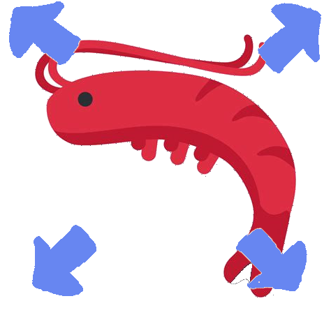

Shrimple Rules
You have 6 guesses to get the correct shrimp.The shrimp image under each field shows the correctness of the field.

Field is correct
Field is incorrect

Field is too big

Field is too small

The daily shrimp shares some elements of this field with the guess shrimp

Either the guess shrimp or the daily shrimp's field is unknown
Comparison is hidden
Timer
There is a timer on the bottom that keeps moving. The timer resets when you guess a shrimp. If the timer runs out, a guess gets skipped.In Multiplayer Mode, after each correct guess, your opponent's timer permanently speeds up.
Effects
In Multiplayer Mode, after each guess, you can send an effect to your opponent.You can switch the current effect you're sending with a keypress, listed beside the effect name
The effect, if not instant, lasts 4 guesses.
The effects can be of the following:
(0)Guess Field Hide: While this effect is active, each field of the shrimp has a chance of its comparison being hidden.
(1)Reduced Time Limit: The timer turns red and the time limit is reduced while this effect is active. (2)Disabled Autofill: The autofill is disabled while this effect is active.
(3)Garbage Shrimp: Two of your shrimp guesses are done for you, with them having 4 out of 6 of their comparisons being hidden.
(4)Bomb Party: You are given a three letter prompt and you must submit a shrimp that includes that prompt within 15 seconds or lose a life. Note that the prompt may include parts of multiple words, eg. sts with Bay Ghost Shrimp. The autofill is disabled while this effect is active.